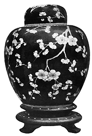
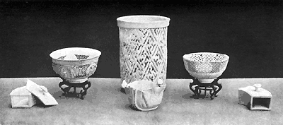

| The Letters of Père
d'Entrecolles
Part 2
From William Burton's Porcelain, It's Art and Manufacture,
B.T. Batsford, London, 1906.
It is time to ennoble the porcelain by passing it over into the
hands of the painters.1 These porcelain
painters are not less poor and wretched than the other workmen,
which is not very surprising when we remember that in Europe they
would only pass for apprentices of a few months' standing. All the
science of these painters, and of Chinese painters in general, is
based on no principles, and only consists in a certain routine helped
by a limited turn of imagination. They know nothing of the beautiful
rules of this art; though it must be acknowledged that they paint
flowers, animals, and landscapes which are much admired, on porcelain
as well as on fans and lanterns of the finest gauze. The painting
is distributed in the same workshop among a great number of workmen.
One workman does nothing but draw the first colour line beneath
the rims of the pieces; another traces flowers, which a third one
paints; this man is painting water and mountains, and that one either
birds or other animals. Human figures are generally treated the
worst. Certain landscapes and plans of towns that are brought over
from Europe to China will hardly allow us, however, to mock at the
Chinese for the manner in which they represent themselves in their
paintings.
As
for the porcelain colours, they are of every kind. In Europe people
hardly see anything else but a vivid blue on a white ground, though
I believe that our merchants have also imported some of the other
kinds.2 There are some pieces the ground
of which is like that of our polished metal mirrors; others are
wholly red, and among these some have the red in the glaze, while
others are of a soufflé red3,
and are sprinkled with little dots almost like our miniatures. When
these two kinds of work are successfully produced which is rather
difficult-they are highly prized and extremely dear.
Finally there are porcelain pieces where the landscapes with which
they are painted are formed of nearly all the different colours,
enhanced by the brilliance of gilding. These are very beautiful
when no expense is spared, but the ordinary porcelain of this kind
is not to be compared with that painted in blue alone. It says in
the annals of Ching-tê-chên that formerly the people
only used white porcelain ; apparently they had not found in the
neighborhood of Jao-chou a blue equal to that which comes from a
great distance and which is very dear.
It is said that a porcelain merchant, having been wrecked on a
desert coast, found there more riches than he had lost. While he
was roaming about the shore, and his servants were making a small
vessel out of the remains of his ship, he perceived that stones
fit to make the most beautiful blue were quite common there. He
took with him a big load, and they say that such beautiful blue
had never been seen at Ching-tê-chên. Later on the Chinese
merchant tried in vain to find the coast where chance had once sent
him.4
The blue is made in the following way : It is buried in the gravel
that lies half a foot deep on the bed of the porcelain furnace,
where it is roasted for twenty-four hours; then it is reduced to
an impalpable powder in the same way as other colours, not on a
marble slab, but in a large porcelain mortar, the bottom of which
is left unglazed, as is also the head of the pestle which is used
for pounding.
The red is made from copperas (crystals of sulphate of iron),
and as it may be that the Chinese have something special in it,
I will report their method. They put a pound of copperas into a
crucible, which is well luted to a second crucible used as a cover,
in which they make a small hole, which is covered so that it can
be easily uncovered if needed. The whole is surrounded by a large
charcoal fire, and in order to have more heat reverberated upon
it they put bricks all round about it. As long as the smoke that
rises (from the hole in the top crucible) is very black the material
is not yet ready, but it is finished as soon as a kind of thin fine
cloud appears. Then they take some of the stuff, mix it with water,
and make an experiment by rubbing it on a piece of fir wood. If
it produces a beautiful red they take away the charcoal fire and
partially cover the crucible. When this has cooled down a small
cake of the red colour is found at the bottom of the crucible, but
the finest red is that which is stuck to the inside of the covering
crucible. One pound of copperas makes four ounces of the red colour.
Although porcelain is naturally white, and the glaze adds to its
whiteness, there are certain decorations for which they use a special
white on the porcelain that is painted in different colours. This
white is made from the powder of a transparent rock, which is calcined
in the oven in the same way as the azure blue.5
To half an ounce of this powder they put an ounce of white lead.
This powder also is used in the preparation of other colours; for
example, to make a green they take half an ounce of the powder of
this pebble, and they add one ounce of white lead and three ounces
of the very purest scoriae of copper.
The prepared green becomes the matrix of the violet colour, which
is obtained by adding a dose of white. The preparation of the green
is varied according to the tint of violet they wish to produce.
A yellow colour is made by taking seven drachms of white prepared
as above, to which they add three drachms of the red colour made
from copperas.
All these colours, put on to the porcelain that is already fired
after having been glazed, appear green, violet, yellow, or red only
after the second firing. The Chinese books say that these colours
can only be applied with white lead, saltpeter, and copperas. The
Christians who are employed in this work have only spoken to me
of white lead, which is mixed with the colour diluted with gum-water.
The red of which I have been speaking, with the ordinary porcelain
glaze, and another glaze made from white pebbles, are prepared in
the same way as the ordinary glazes. I have not been able to learn
the quantity either of one or the other; neither how much red is
mixed with this glaze; but experiments will reveal the secrets.
They then put the porcelain to dry, and fire it in the ordinary
oven. If after the firing the red comes out pure and brilliant without
blemishes, they have obtained the perfection of the art. These porcelain
pieces have no resonance when they are struck.6
The other kind of red, known as soufflé red, is made
thus : The colour having been prepared, they take a tube, one end
of which is covered with very fine gauze; they softly apply the
bottom of the tube to the colour ; the gauze being filled with colour,
they blow into the tube, and the porcelain is covered all over with
little red spots. This kind of porcelain is rarer and dearer than
the other, because it is more difficult to make if they must observe
the necessary precautions. The black porcelain has also its value
and its beauty; this black contains lead, and is not unlike our
polished metal mirrors. When this is gilded it is still more charming.
The black colour is given to the porcelain when it is dry, and for
this purpose they mix three ounces of blue with seven ounces of
ordinary glaze.7 Experiments will tell
you exactly how to make this mixture according to the required shade.
When the colour is dry they fire the porcelain, and afterwards they
paint the gold upon it and fire it again in a special furnace.
Another kind of porcelain that is made here I have not seen before.
It is all perforated like cut paper work, while inside it is a cup
for holding a liquid. The cup is in one piece with the perforated
envelope. I have seen other porcelains on which Chinese and Tartar
ladies were painted in natural colours. The drapery, the complexion,
and the features were all exquisite, so that from a distance one
might have thought they were pieces of enamel.
It may be remarked that when they use on their porcelains the
glaze made from white pebbles, the ware becomes a special kind which
they call Tsoui-ki. This is all marbled and cracked with an infinity
of veins, so that from a distance one might think it was shattered
into a thousand fragments without falling to pieces, so that it
resembles a piece of mosaic work. The colour which is given by this
glaze is a somewhat ashen white. If the piece of porcelain has been
painted in blue and this glaze is used upon it, it appears likewise
cracked and marbled when the colour is dry.
When they wish to apply gold they beat it and grind it in water
in a porcelain dish until they see underneath the water a little
golden cloud. This they leave to dry, and in use they mix it with
a sufficiency of gum-water, and with thirty parts of gold they incorporate
three parts of white lead, and put it on the porcelain in the same
way as the colours.
Finally there is a kind of porcelain made as follows They give
it the ordinary glaze and fire it, then they paint it with different
colours and fire it again; sometimes the painting is reserved intentionally
until after the first fire, and sometimes they use this method to
hide defects in the porcelain pieces by painting colours on the
defective places and firing them a second time. This porcelain,
though it is over-coloured, is, however, liked by many people. It
often happens that one feels unevennesses on porcelain of this kind,
which may be due to the want of skill of the workman, or it may
be that it was necessary to give shadows to the painting, or that
it was intended to cover the defects of the porcelain body. When
the painting is dry, as well as the gilding, if there is any, they
pile the porcelain pieces into the kiln, putting the small ones
into the big ones. The kilns for firing the goods may be made of
iron if they are small, but generally they are of clay. The one
I saw was as high as a man and nearly as wide as our biggest wine
cask; it was made in several pieces, and from the same materials
as the porcelain saggars, the separate pieces being a foot high
and a foot and a half long, though they were only a finger's breadth
thick. Before they were fired they had been rounded into the proper
shape; they were put one over another and well cemented. The bottom
of the kiln was raised half a foot from the ground. It was put on
rows of thick but not very big bricks, while round the kiln was
a wall of well-baked bricks, which had at the bottom three or four
holes like the hollows of a fireplace. This brick wall left an empty
space of about half a foot, with the exception of three or four
places which were filled up so as to make ribs for the kiln. I believe
they erect the kiln and its enclosure at the same time, otherwise
the kiln would have no support. They fill the kiln with the porcelain
pieces that are to be fired a second time, putting them in piles,
the smaller pieces into the bigger ones, as I have said. When all
is ready they cover the top of the kiln with pieces of pottery like
those used for the sides ; these pieces, which cross one another,
are closely united together by a clay mortar. Only in the middle
do they leave a hole through which they can see when the porcelain
is sufficiently fired. They light a quantity of charcoal under the
kiln as well as on the top, and they put pieces into the space between
the brick enclosure and the kiln, the hole on the top of the kiln
being covered with a piece of broken pitcher. When the fire has
become bright they look from time to time through this hole, and
when the porcelain seems shiny and the colours are bright and glossy
they pull out the fire and afterwards the porcelain.

An idea comes into my mind about these colours which are used
on porcelain pieces that have already been fired, and are rendered
glossy by means of white lead, to which, according to the annals
of Fou-Iiang they formerly added saltpeter and copperas. If one
were to use white lead with the colours that glass quarries are
painted with, and if, afterwards, one were to give them a second
firing, should we not recover the secret formerly possessed of painting
upon glass without losing anything of its transparency? One might
try by an experiment. This secret which we have lost makes me recall
another secret that the Chinese regret they possess no longer. They
once knew the art of painting on the sides of porcelain pieces fishes
or other animals that could only be seen when the piece was filled
with some liquid. They call this kind of porcelain " azure
put in the press," because of the position in which the blue
colour is placed. I will give an account of what they have retained
of this secret, in the hope that Europeans may be able to contrive
what the Chinese no longer know. For this method the porcelain must
be very thin; when it was dry they put the colour rather plentifully,
not on the outside of the piece as is their usual custom, but on
the inside. They generally painted fishes, as if they were more
suitable to be revealed when the cup was filled with water. When
the colour had dried, they put a thin layer of dilute slip upon
it. This layer pressed the blue between the two sheets of clay.
When the layer was dry they put glaze inside the porcelain piece,
and some time afterwards they put it on the mould on the wheel.
As it had been thickened from the inside they pared it down on the
outside without going as far as the colour, and after that they
dipped the outside of the porcelain piece in the glaze, and, all
being dry, it was fired in the ordinary way. This was exceedingly
delicate work, and required skill that apparently the Chinese no
longer possess. From time to time they try to recover the art of
this magical painting, but in vain. One of them assured me a little
while ago that he had made fresh trials, and that lie had been nearly
successful.
Be that as it may, it is possible to say that even now a beautiful
blue colour reappears on porcelain after having been lost for some
time. When the colour is first painted it is of a pale black ; when
it is dry and the glaze has been put upon it, it disappears entirely,
and the porcelain seems quite white, the colour being buried under
the glaze ; but the fire makes it appear in all its beauty, almost
in the same way as the natural heat of the sun makes the most beautiful
butterflies, with all their tints, come out of their eggs. I will
add a circumstance that I must not forget, viz.- that before the
porcelain is glazed they polish it, and remove the slightest irregularities.
For this purpose they use a brush made of very small feathers; the
brush being slightly dipped into the water and passed over the piece
with a very light touch. Great skill is required in putting the
glaze on to the porcelain so that it is not too thick, and that
it is evenly spread over the piece. For porcelain pieces that are
very thin and light, they apply two slight coats of glaze. If the
coats of glaze are too thick the thin sides of the vessel cannot
support them, and will instantly sink out of shape. These two layers
are equal to one ordinary layer of glaze such as is put on the thicker
pieces. The first coating is put on by sprinkling, the other by
immersion. The cup is held in the hand from outside, sloping over
the vessel that contains the glaze, and with the other hand they
pour inside as much glaze as is needed to wet it everywhere. This
is done to a great many cups, and when the first ones are dry inside,
the glaze is put on the outside as follows : The workman puts one
hand into the cup, and, supporting it with a little stick under
the middle of its foot, he dips it into the vessel filled with glaze,
and quickly draws it out again.
Footnotes:
- Hua p'i : literally 'painters on the
unfired clay.'
- A further proof of the predominance of
blue-and-white pieces among the porcelains first imported into
Europe in large quantities.
- Soufflé glazes or colour-effects are those obtained
by blowing the pigment through a gauze, generally on to the fired
glaze.
- Is this some legendary Chinese account of the imported Mohammedan
blue of the fifteenth century?
- Dr. Bushell suggests that this transparent white pebble is native
white arsenic. It must be pointed out that the accounts given
in the first letter of the preparation of colours are very imperfect-they
are largely corrected in the second letter (q.v.).
- This is the famous Sang-de-Boeuf glaze which the Chinese regarded
as such a precious secret, that Pere d'Entrecolles never obtained
accurate information about it.
- Another piece of partial information which is corrected in the
second letter.
More Articles
|